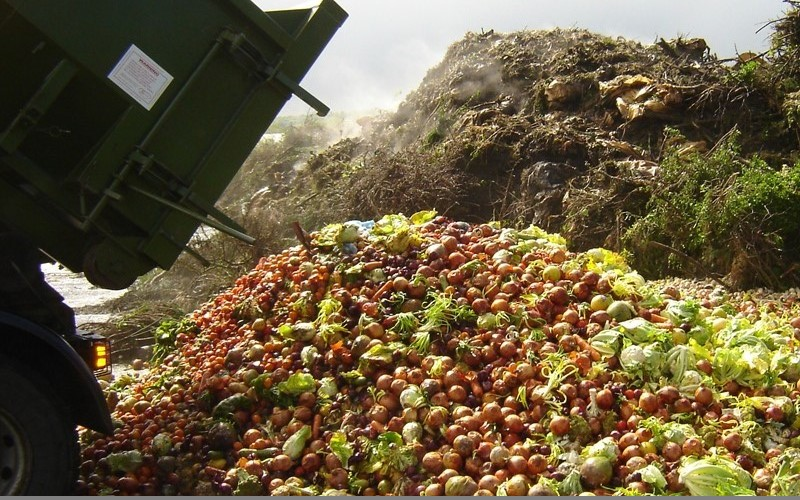
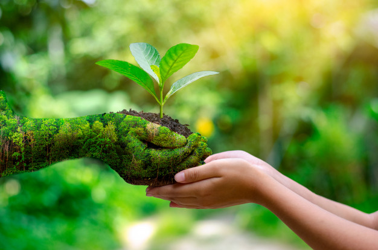

Um terço de toda a comida produzida no mundo é desperdiçada, segundo a Organização das Nações Unidas para a Alimentação e a Agricultura, a FAO. Isso representa 1,3 bilhão de toneladas de comida todos os anos.

2.1 Até 2030, Acabar com a fome e garantir o acesso de todas as pessoas, em particular os pobres e pessoas em situações vulneráveis,incluindo crianças, a alimentos seguros, nutritivos e suficientes durante todo o ano.
2.2 Até 2030, acabar com todas as formas de desnutrição, incluindo atingir, até 2025, as metas acordadas internacionalmente sobre nanismo e caquexia em crianças menores de cinco anos de idade, e aten0der às necessidades nutricionais dos adolescentes, mulheres grávidas e lactantes e pessoas idosas.
2.3 Até 2030, dobrar a produtividade agrícola e a renda dos pequenos produtores de alimentos, particularmente das mulheres, povos indígenas, agricultores familiares, pastores e pescadores, inclusive por meio de acesso seguro e igual à terra, outros recursos produtivos e insumos, conhecimento, serviços financeiros, mercados e oportunidades de agregação de valor e de emprego não agrícola.
2.4 Até 2030, garantir sistemas sustentáveis de produção de alimentos e implementar práticas agrícolas resilientes, que aumentem a produtividade e a produção, que ajudem a manter os ecossistemas, que fortaleçam a capacidade de adaptação às mudanças climáticas, às condições meteorológicas extremas, secas, inundações e outros desastres, e que melhorem progressivamente a qualidade da terra e do solo.
